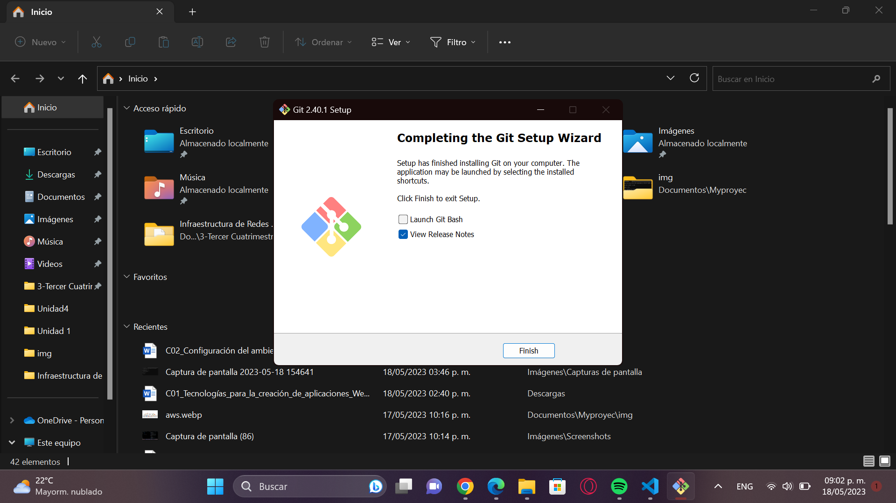

| Contenido | |
|---|---|
| Proposito del Software | Proceso de instalación |
| Video de Instalación (Auxiliar) | Evidencia de Instalación |
Es un software de control de versiones, pensado para la eficiencia, la confiabilidad y compatibilidad del mantenimiento de versiones de aplicaciones cuando tienen muchos archivos fuente
Para instalar Git, deberas:
En este video se explica el proceso de instalación de Git
Esta es mi evidencia de Instalación
